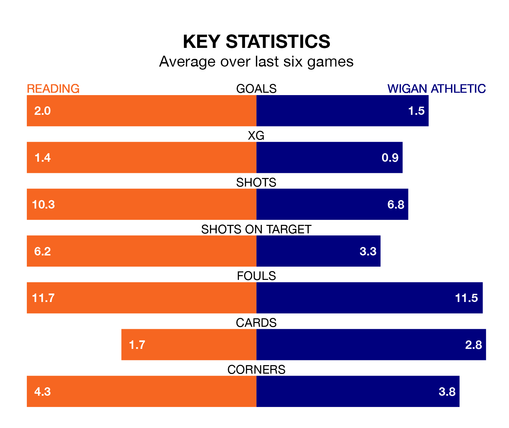

Wigan Athletic travel to Reading on Saturday in EFL League One.
The visitors come into the game on the back of a defeat in their last match, having lost to Port Vale 3-2 away, with goals from Charlie Wyke and Chris Sze.
The Royals, meanwhile, drew their last match, 1-1 against Lincoln City, with their goal scored by Harvey Knibbs.
In the last 10 years, Reading and Wigan have played each other on 11 occasions. Reading won five of them, Wigan three, and they drew three times.
On average, the Royals scored 1.3 goals and the Latics 1.2 in those matches.
Their last meeting was on April 29, when they played out a 1-1 draw.
With 32 goals in 21 games so far this season, Wigan are scoring more than average in the league with 1.5 goals per game. And they are conceding fewer than average, letting in 26 goals at a rate of 1.2 per game.
Reading, meanwhile, are below average scorers, with 1.2 goals per game, compared to a league average of 1.3. They have conceded 1.7 goals per game.
The Royals are 20th in the table after 21 games, of which they have won five and drawn four, earning 19 points.
Athletic are 10 places ahead of the home side in 10th, with nine wins and four draws putting them on 31 points.
In Wyke and Stephen Humphrys, the Latics have two of the league's most on-form strikers so far this season. They have notched seven goals each, to sit eighth in the scoring charts.
Reading's top scorer, with five goals in 20 games, is Knibbs.
Reading are in mixed form in EFL League One, with two wins and two draws from their last six games.
With two wins and three draws over that period, the visitors' form is slightly better – they have taken nine points from 18, compared to the Royals' eight.
Saturday's match will be refereed by Martin Woods, who has taken charge of five EFL League One games so far this season, issuing one red card and booking 19 players. He has awarded one penalty.
He is yet to oversee a match featuring either Reading or Wigan this season.
Updated: 15:16, 21/12/23